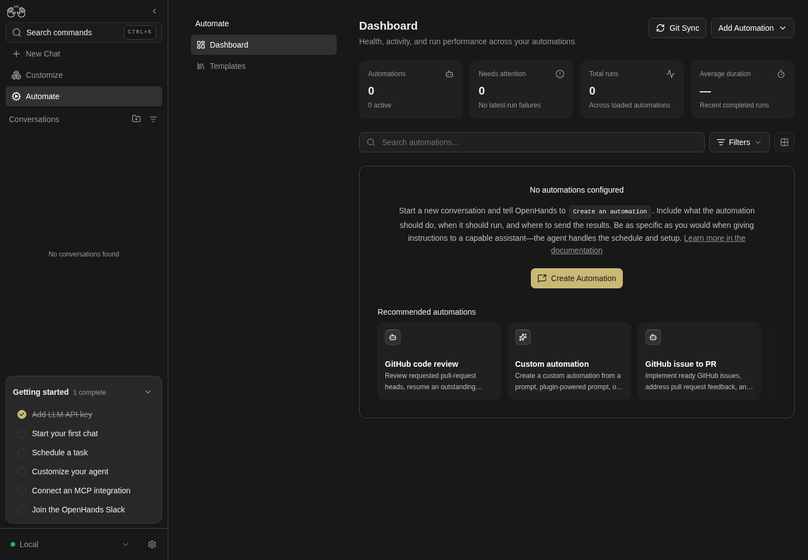
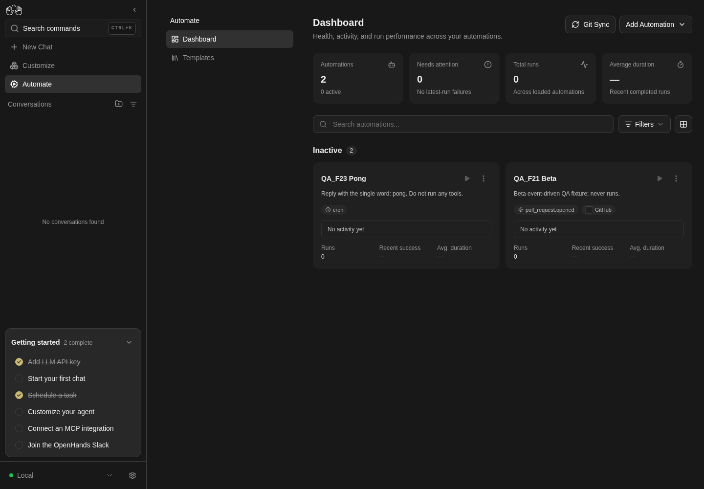

How to get to it
- Sidebar Automate (
sidebar-automations-link); hovering it reveals the pin (sidebar-pin-home-toggle-automations). - Direct URL
/automations; the Templates sub-page is/automations/templates(F22). - Command menu (
Control+k/Meta+korcommand-menu-trigger): typeAutomationsor a keyword such ascron, press Enter. - With Automate pinned,
/(logo, a bare visit) lands on/automations. - Sub-page navigation:
automations-navbar-desktop(aside) orautomations-navbar-mobile(phone strip), linksautomations-navigation-listandautomations-navigation-templates. - Header Add Automation (
automations-add-automation) → Create Automation (automations-add-automation-create) or Import automation (automations-import-automation, F22); on the empty dashboard, the Recommended automations rail cards (recommended-automation-rail-card-<id>). - Getting-started checklist item Schedule a task links to
/automations(onboarding checklist family). - Per automation: Play (
automation-run-now-<id>, name "Run now") and kebab (name "Automation actions") on each card or row; the card itself and the row link open the detail page (F23).
Before you start
Start with the common launch and health checks, then follow this family’s preconditions in order. Recipes share the fixtures and state named below.
Preconditions:
- Baseline state (launched, doctored,
onboard --skipdone) with an active LLM profile for Run now (control-openhands llm preset deepseek, or--api-key-file <file>when the key is in a file). - No automations exist (
control-openhands api GET /api/automation/v1shows"total": 0); the recipes start from the empty state. - Fixtures are imported through Add Automation → Import automation (F22 owns that flow; here it only arranges). Create the files first; each command prints the path to upload (
$OH_VERIFY_RUN/evidence/_fixtures/<name>):control-openhands fixture file --name qa-f21-alpha.automation.json --content '{"version":1,"kind":"automation","spec":{"name":"QA_F21 Alpha","trigger":{"type":"cron","schedule":"0 0 1 1 *","timezone":"UTC"},"enabled":false,"prompt":"Reply with the single word: pong. Do not run any tools."}}',control-openhands fixture file --name qa-f21-beta.automation.json --content '{"version":1,"kind":"automation","spec":{"name":"QA_F21 Beta","trigger":{"type":"event","source":"github","on":"pull_request.opened"},"enabled":false,"prompt":"Beta event-driven QA fixture; never runs."}}',control-openhands fixture file --name qa-f21-fail.automation.json --content '{"version":1,"kind":"automation","spec":{"name":"QA_F21 Fail","trigger":{"type":"cron","schedule":"0 0 1 1 *","timezone":"UTC"},"enabled":false,"prompt":"Reply with the single word: pong.","timeout":1}}'. The yearly cron (0 0 1 1 *) keeps a turned-on fixture from firing on its own. - Selectors below avoid run-specific ids:
[data-testid^="automation-card-"] >> has-text=<name>(grid) and[data-testid^="automation-list-row-"] >> has-text=<name>(list). The kebab menu renders in a portal with no test ids; scope its items asrole=list >> has-text=Export >> role=button[name="..."].
Behavior inventory
34 stable behavior IDs and their expected behavior
F21.pin-homethe pin on the sidebar Automate item makes/redirect to/automations; unpinning restores the normal home. Read recipe ↓F21.manifest-404without an admitted automation interface manifest,/automationsis a 404 from the layout error boundary and the Automate entries are hidden. Read recipe ↓F21.health-loadingwhile the health check runs, the page shows the title and three card skeletons. Read recipe ↓F21.list-loadingonce the backend is healthy, the header, tiles and controls render at once while three card skeletons stand in for the list until the first page arrives. Read recipe ↓F21.list-errorwhen the list request fails with nothing cached, the page shows Failed to load automations with Retry. Read recipe ↓F21.empty-statewith zero automations the page shows No automations configured, the "Create an automation" instructions, a docs link, Create Automation and the Recommended automations rail; the view toggle is disabled. Read recipe ↓F21.empty-raila Recommended automations card on the empty dashboard opens its template setup at/automations/new/<template-id>(F22 owns the setup flow). Read recipe ↓F21.overview-tilesfour tiles summarize the loaded org list: Automations (N active), Needs attention (Latest run failedorNo latest-run failures; an enabled automation counts when its latest run is Failed or its task outcome isfailedorblocked, while Partial and Needs review do not count), Total runs and Average duration. Read recipe ↓F21.searchthe search box narrows the visible automations client-side by name, prompt, repository or model; the tiles do not change. Read recipe ↓F21.filtersthe Filters popover filters by status (All / Active / Needs attention / Disabled) and trigger (All / Scheduled / Event-driven), counts non-default choices in a badge and offers Reset all; it stays open while the user changes several choices. Read recipe ↓F21.sortSort (Latest run / Most runs / Name) orders automations inside each group and counts as a non-default choice. Read recipe ↓F21.filtered-emptywhen nothing matches, No automations match these filters and Clear filters appear; Clear filters resets search, status and trigger but keeps the sort. Read recipe ↓F21.view-togglethe view-mode menu switches Grid and List; the choice survives a reload. Read recipe ↓F21.card-grida grid card shows name, prompt preview, trigger pills, sparkline, a status strip (latest run status, summary, relative time, or No activity yet) and Runs / Recent success / Avg. duration stats. Read recipe ↓F21.list-rowa list row shows a health dot, name, schedule or event, relative last run, run badge, sparkline, Play and kebab; its link is labelled<name> <status>. Read recipe ↓F21.row-tooltiphovering a list row shows a preview card with the name, Trigger, Status and, once it has run, Last run and Task (the run summary); the Play button's tooltip reads Run now. Read recipe ↓F21.summary-hovercardhovering a grid card's truncated run summary shows the full summary in a hovercard. Read recipe ↓F21.sparkline-deeplinka sparkline bar links to/automations/<id>?run=<runId>, which opens the detail page with that run highlighted. Read recipe ↓F21.open-detailkebab View, the row link, a card click and Enter on a focused card all open/automations/<id>. Read recipe ↓F21.load-morepast 50 automations a Load more button fetches the next page and disappears when everything is loaded. Read recipe ↓F21.run-nowPlay or kebab Run now on an enabled automation dispatches a run with the toast Automation dispatched; the card moves through Pending/Running to the result. Both are disabled on a disabled automation. Read recipe ↓F21.run-now-errora failed dispatch shows exactly one error toast with the API message; when the automation is gone (Automation not found), its card then drops out of the dashboard without a reload. Read recipe ↓F21.togglekebab Turn on / Turn off flips the enabled flag immediately (no confirmation on the dashboard) and moves the automation between the Active and Inactive groups. Read recipe ↓F21.editkebab Edit opens the edit modal prefilled from the automation; Save persists (field-level editing is F23). Read recipe ↓F21.exportkebab Export downloads<name-slug>.automation.jsonwithversion,kind: "automation"and the spec. Read recipe ↓F21.deletekebab Delete asksDelete "<name>"? This cannot be undone.; Cancel and the X keep it, Delete removes it for good, and Escape dismisses the dialog. Read recipe ↓F21.phoneat 390 px the dashboard has no horizontal overflow, tiles wrap 2×2 and the kebab menu stays inside the viewport. Read recipe ↓
Readable recipes
Read each script from top to bottom. Code is copied from the map; prose gives the action, expected observation, and conditions. <id>, <run> and similar placeholders stand for values from your own run. Short forms such as browser count continue the same control-openhands invocation; they are kept as documented.
Expected observations describe the recipe’s contract. Captures below selected recipes show representative real states from this snapshot; they do not mark every mapped behavior as passed. Follow cleanup before moving to another family.
No recipes match. Try another word or a behavior ID.
Sidebar entry #
- NoteFrom
/run - Do
control-openhands browser click 'testid=sidebar-automations-link' - Check
control-openhands browser url - Check
control-openhands browser testids --filter automations-navigation - ExpectThe URL is
/automations, themainheading is Dashboard, andautomations-navigation-listandautomations-navigation-templatesare listed.
Command menu #
- Do
control-openhands browser goto /(Sidebar entry ends on
/automations, where the URL check would pass at once), - Do
control-openhands browser press Control+k - Do
control-openhands browser type 'testid=command-menu >> role=combobox' cron - Check
control-openhands browser snapshot 'testid=command-menu' - Do
control-openhands browser press Enter - Check
control-openhands browser url - ExpectThe snapshot lists exactly one option,
Automations Review scheduled and webhook automations. Go([selected], under Navigation), and the URL ends in/automations.
Pin as home #
- NoteOn any page run
- Do
control-openhands browser hover 'testid=sidebar-automations-link' - Do
control-openhands browser click 'testid=sidebar-pin-home-toggle-automations' - Check
control-openhands browser attr 'testid=sidebar-pin-home-toggle-automations' aria-pressed(
true;aria-labelbecomesUnpin as home page), then - Do
control-openhands browser goto / - Check
control-openhands browser url - Note: the URL is
/automations. - NoteUnpin with the same hover and click (
aria-pressedfalse); - Do
control-openhands browser goto / - Notethen stays on
/.
Sub-page navigation #
- NoteOn
/automations(control-openhands browser goto /automations; Pin as home ends on/) run - Do
control-openhands browser click 'testid=automations-navbar-desktop >> testid=automations-navigation-templates'(URL
/automations/templates, h1 Templates), - Do
control-openhands browser click 'testid=automations-navbar-desktop >> testid=automations-navigation-list' - Check
control-openhands browser attr 'testid=automations-navbar-desktop >> testid=automations-navigation-list' aria-current(
page). - NoteBelow 1024 px the same links live under
testid=automations-navbar-mobile(see Phone), tablets included: run - Do
control-openhands browser viewport tablet(820 px),
- Check
control-openhands browser visible 'testid=automations-navbar-mobile'(
true) and - Check
control-openhands browser visible 'testid=automations-navbar-desktop'(
false), then - Do
control-openhands browser viewport desktop
Backend unavailable #
- Do
control-openhands service stop automation - Do
control-openhands browser goto /automations - Wait
control-openhands browser wait-text 'Automations Unavailable' - Check
control-openhands browser text 'role=main' - Do
control-openhands browser screenshot --feature F21.backend-unavailable --name unavailable - ExpectThe main pane reads
Dashboard, the subtitle,Automations Unavailable,The automations backend is not available right now. ...andRetry; the sidebar Automate item stays. - Do
control-openhands restart(the page stays put),
- Do
control-openhands browser click 'role=button[name="Retry"]' - Wait
control-openhands browser wait 'testid=automations-empty' - Note: the dashboard returns without a reload.
List error #
- ExpectThe health result is cached for 30 s, and every page's sidebar checklist fetches it but not the 50-row list.
- Do
control-openhands browser goto /settings/secrets - Notethen within 30 s
- Do
control-openhands service stop automation - Check
control-openhands browser click 'testid=sidebar-automations-link' --expect-url '/automations' - Wait
control-openhands browser wait-text 'Failed to load automations' - ExpectThe header, tiles (zeros) and Filters render above
Failed to load automationsandRetry; screenshot with--feature F21.list-error --name list-error. - Do
control-openhands restart - Noteclick
role=button[name="Retry"]and wait fortestid=automations-empty. - NoteStarting from
/does not work: home loads the same list, so the cached copy is shown instead of the error.
List loading #
- Do
control-openhands browser goto /settings/secrets - Do
control-openhands browser click 'testid=sidebar-automations-link' --observe '[data-testid="automation-card-skeleton"], [data-testid="automations-add-automation"]' --observe-ms 2000 - NoteOne observed state is
Add Automationplus three empty skeleton entries (about 50 ms), followed byAdd Automationalone.
Health loading and missing manifest #
- NoteBlocked.
- ExpectThe health-only skeleton (title and three
automation-card-skeleton, no header buttons) shows only on the first health fetch, which the sidebar checklist always makes before a user can reach the dashboard, and stopping the service makes the fetch fail at once rather than hang. - ExpectThe 404 needs a build without the automation interface manifest.
Empty state #
- NoteWith no automations run
- Do
control-openhands browser goto /automations - Check
control-openhands browser text 'testid=automations-empty' - Check
control-openhands browser enabled 'testid=automations-view-toggle' - Do
control-openhands browser screenshot --feature F21.empty-state --name empty - ExpectThe text starts
No automations configured, containsCreate an automation,Learn more in the documentationandCreate Automation, and lists the Recommended automations;enabledisfalse; the tiles readAutomations 0 / 0 activeandNeeds attention 0 / No latest-run failures. Create Automation (automations-create-automation) starts a model-backed chat: see F22.

Empty dashboard shows no configured automations and recommended workflows.
No automation is executed or scheduled.
How this screenshot was taken
agent server: 1.53.0 · automation: 1.19.0 (launcher default) · canvas: 1.26.0
control-openhands browser goto /automations
control-openhands browser wait testid=automations-empty --timeout 10000
control-openhands browser screenshot --feature F21.empty-state --name empty-dashboardAdd Automation menu #
- Do
control-openhands browser click 'testid=automations-add-automation' - Check
control-openhands browser snapshot 'testid=automations-add-automation-menu' - Note: buttons
Create AutomationandImport automation. - Do
control-openhands browser press Escape(or a click on
role=heading[name="Dashboard"]) makesbrowser count 'testid=automations-add-automation-menu'0. - NoteReopen it,
- Do
control-openhands browser click 'testid=automations-add-automation-create' - Check
control-openhands browser snapshot 'role=dialog' - Note:
dialog "How to create an automation"with Close, the instructions (Create an automationas code),Learn more in the documentation(https://docs.openhands.dev/openhands/usage/automations/overview) andCreate Automation(automations-create-automation, model-backed, F22). - Do
control-openhands browser click 'testid=add-automation-modal-close' - Noteand
browser press Escapeeach makebrowser count 'testid=add-automation-modal'0.
Recommended rail on the empty dashboard #
- NoteWith no automations,
- Do
control-openhands browser click 'testid=automations-empty >> testid=recommended-automation-rail-card-custom-automation' --expect-url 'automations/new' - Notelands on
/automations/new/custom-automationwith the Before you start prerequisites dialog (F22). - Do
control-openhands browser backreturns to
/automations; therebrowser attr 'testid=recommended-automations-rail-fade-left' data-visibleisfalseand...-fade-rightistrue(scrolling is F03.recommended-automations-rail).
Arrange two automations (import, F22) #
- Do
control-openhands browser click 'testid=automations-add-automation' - Do
control-openhands browser click 'testid=automations-import-automation' - Do
control-openhands browser upload 'testid=automations-import-file' "$OH_VERIFY_RUN/evidence/_fixtures/qa-f21-alpha.automation.json" - Do
control-openhands browser click 'testid=import-automation-confirm' - Wait
control-openhands browser wait 'testid=import-automation-modal' --state detached - NoteRepeat with
qa-f21-beta.automation.json. - ExpectBoth arrive disabled, under Inactive 2.
Grid cards #
- Do
control-openhands browser reload - Check
control-openhands browser snapshot 'role=main' - Do
control-openhands browser screenshot --feature F21.card-grid --name grid - NoteEach card shows its name, prompt, pills (
pull_request.opened+ GitHub logo for Beta,cronfor Alpha), No activity yet, andRuns 0 / Recent success — / Avg. duration —; both Play buttons are[disabled].

Dashboard grid shows two local inactive automation cards.
Fixtures arranged with API; only UI cards are proof. Both automations disabled; no run or webhook dispatched.
How this screenshot was taken
agent server: 1.53.0 · automation: 1.19.0 (launcher default) · canvas: 1.26.0
control-openhands api POST /api/automation/v1/preset/prompt --write --data '{"name":"QA_F23 Pong","prompt":"Reply with the single word: pong. Do not run any tools.","trigger":{"type":"cron","schedule":"0 9 * * *","timezone":"UTC"},"enabled":false}'
control-openhands api POST /api/automation/v1/preset/prompt --write --data '{"name":"QA_F21 Beta","prompt":"Beta event-driven QA fixture; never runs.","trigger":{"type":"event","source":"github","on":"pull_request.opened"},"enabled":false}'
control-openhands browser goto /automations
control-openhands browser reload
control-openhands browser screenshot --feature F21.card-grid --name grid-cardsKebab menu #
- Do
control-openhands browser click '[data-testid^="automation-card-"] >> has-text=QA_F21 Alpha >> role=button[name="Automation actions"]' - Check
control-openhands browser snapshot 'role=list >> has-text=Export' - Note: buttons
Run now [disabled],View,Export,Edit,Turn on,Delete. - Do
control-openhands browser press Escape - Check
control-openhands browser count 'role=list >> has-text=Export'is
0. - NoteReopen it and click
role=heading[name="Dashboard"]; the count is0again.
Turn on #
- NoteOpen Alpha's kebab as above, run
- Do
control-openhands browser click 'role=list >> has-text=Export >> role=button[name="Turn on"]' - Do
control-openhands browser reload - Check
control-openhands browser snapshot 'role=main' - ExpectNo dialog appears; an Active 1 group holds QA_F21 Alpha, the Automations tile reads
2 / 1 active, and Alpha's Play is enabled (control-openhands browser enabled '[data-testid^="automation-card-"] >> has-text=QA_F21 Alpha >> role=button[name="Run now"]'istrue).
Run now from Play #
- Do
control-openhands browser click '[data-testid^="automation-card-"] >> has-text=QA_F21 Alpha >> role=button[name="Run now"]' - Wait
control-openhands browser wait-text 'Automation dispatched' - Do
control-openhands browser screenshot --feature F21.run-now --name toast - ExpectThe URL stays
/automations, the status strip reads Pending, then Running, and Total runs becomes1. - NoteAbout 40 s later, after a reload, the strip reads Successful with the agent's summary and the sidebar lists a conversation titled
QA_F21 Alpha — <UTC timestamp>(control-openhands conversation list).
List view #
- Do
control-openhands browser click 'testid=automations-view-toggle' - Do
control-openhands browser click 'testid=automations-view-toggle-list' - Do
control-openhands browser reload - Check
control-openhands browser count '[data-testid^="automation-list-row-"]'(
2) and - Do
control-openhands browser eval "localStorage.getItem('openhands-automations-view')"(
"list"). - Check
control-openhands browser text '[data-testid^="automation-list-row-"] >> has-text=QA_F21 Alpha'reads
QA_F21 Alpha / 0 0 1 1 * / <relative time> / <status>, and - Check
control-openhands browser attr '[data-testid^="automation-list-row-"] >> has-text=QA_F21 Alpha >> role=link >> nth=0' aria-labelis
QA_F21 Alpha <status>(for exampleQA_F21 Alpha Running). - NoteScreenshot with
- Do
control-openhands browser screenshot --feature F21.list-row --name list - NoteEscape closes the open view menu (
control-openhands browser count 'testid=automations-view-toggle-list'is0).
Hover previews #
- ExpectAfter Alpha's run has succeeded, in list view run
- Do
control-openhands browser tooltip '[data-testid^="automation-list-row-"] >> has-text=QA_F21 Alpha >> role=link >> nth=0' - Note:
QA_F21 Alpha / Trigger / 0 0 1 1 * / Status / Successful / Last run / <relative time> / Task / <the run summary>(a row without runs shows only Trigger andStatus / No activity yet). - Do
control-openhands browser tooltip '[data-testid^="automation-list-row-"] >> has-text=QA_F21 Alpha >> role=button[name="Run now"]'is
Run now. - NoteIn grid view (
control-openhands browser click 'testid=automations-view-toggle',control-openhands browser click 'testid=automations-view-toggle-grid'), - Do
control-openhands browser tooltip '[data-testid^="automation-card-"] >> has-text=QA_F21 Alpha >> text=Replied'(the start of the truncated summary) returns the full summary, for example
Replied with the single word "pong" as requested, without running any tools.Switch back withtestid=automations-view-toggleandtestid=automations-view-toggle-list: the next bullets count list rows.
Sparkline deep link #
- ExpectAfter Alpha has a run, run
- Check
control-openhands browser attr '[data-testid^="automation-activity-"] >> role=link >> nth=0' href - Do
control-openhands browser click '[data-testid^="automation-activity-"] >> role=link >> nth=0' - Check
control-openhands browser url - Check
control-openhands browser testids --filter run - ExpectThe href and URL are
/automations/<id>?run=<runId>, andautomation-run-highlight-<runId>is visible. - NoteReturn with
- Do
control-openhands browser goto /automations
Search #
- Do
control-openhands browser fill 'role=textbox[name="Search automations..."]' pong - Check
control-openhands browser count '[data-testid^="automation-list-row-"]' - ExpectThe count is
1(Alpha matches by prompt only). - NoteThen fill
zzqa-nomatch; - Check
control-openhands browser text 'testid=overview-tile-automations' - Notestill reads
Automations 2 / 1 active.
Filtered empty and Clear filters #
- NoteWith
zzqa-nomatchin the search box run - Check
control-openhands browser text 'testid=automations-filtered-empty'(
No automations match these filters/Clear filters), - Do
control-openhands browser click 'testid=automations-clear-filters' - Check
control-openhands browser value 'role=textbox[name="Search automations..."]'(empty) and the row count (
2).
Filters #
- Do
control-openhands browser click 'testid=automations-filters >> testid=dropdown-trigger >> nth=0' - Check
control-openhands browser snapshot 'testid=automations-filters-menu'(Filter by status
All statuses, Filter by triggerAll triggers, Sort automationsLatest run), - Check
control-openhands browser click 'testid=automations-filter-status >> testid=dropdown-trigger' - Check
control-openhands browser click 'testid=automations-filter-status-disabled' - Check
control-openhands browser text 'testid=automations-filters >> testid=dropdown-trigger >> nth=0'(
Filters 1) and the row text (only QA_F21 Beta). - ExpectThe popover stays open:
- Check
control-openhands browser count 'testid=automations-filters-menu'is
1and - Check
control-openhands browser attr 'testid=automations-filters >> testid=dropdown-trigger >> nth=0' aria-expandedis
true. - NoteIn the same popover run
- Do
control-openhands browser click 'testid=automations-filter-trigger >> testid=dropdown-trigger' - Do
control-openhands browser click 'testid=automations-filter-trigger-schedule' - Note: the badge is
Filters 2,testid=automations-filtered-emptyappears and the menu count is still1(control-openhands browser screenshot --feature F21.filters --name two-filters). - Do
control-openhands browser click 'testid=automations-filters-reset' - Note: both rows return, the button reads
Filtersand the popover stays open. - NoteTrigger Event-driven (
automations-filter-trigger-event, chosen in the same open popover) alone leaves only QA_F21 Beta. - ExpectAn outside click closes the popover:
- Do
control-openhands browser click 'role=heading[name="Dashboard"]' - Notethen the menu count is
0andaria-expandedisfalse. - Do
control-openhands browser reload - Noteto clear the filter (filters are page state): the next bullets need Alpha visible.
Turn off #
- NoteIn list view run
- Do
control-openhands browser click '[data-testid^="automation-list-row-"] >> has-text=QA_F21 Alpha >> role=button[name="Automation actions"]' - Do
control-openhands browser click 'role=list >> has-text=Export >> role=button[name="Turn off"]' - Check
control-openhands browser count 'testid=confirmation-modal'(
0, no confirmation), - Do
control-openhands browser reload - ExpectThe page shows Inactive 2 with the tile at
0 active, and Play reportsenabledfalse.
Edit from the dashboard #
- NoteTurn off (above) left both automations in the Inactive group, as Sort needs.
- NoteOpen Alpha's kebab,
- Do
control-openhands browser click 'role=list >> has-text=Export >> role=button[name="Edit"]' - Check
control-openhands browser value 'testid=edit-automation-name'(
QA_F21 Alpha;edit-automation-cronis0 0 1 1 *,edit-automation-modelisActive profile), - Do
control-openhands browser fill 'testid=edit-automation-name' 'QA_F21 Zulu' - Do
control-openhands browser click 'testid=edit-automation-save' - Wait
control-openhands browser wait 'testid=edit-automation-save' --state detached - Do
control-openhands browser reload - Check
control-openhands api GET /api/automation/v1shows
QA_F21 Zuluwith the schedule unchanged.
Sort #
- NoteWith QA_F21 Zulu (1 run) and QA_F21 Beta (no runs) both inactive, open Filters,
- Do
control-openhands browser click 'testid=automations-sort >> testid=dropdown-trigger' - Do
control-openhands browser click 'testid=automations-sort-name' - Check
control-openhands browser text '[data-testid^="automation-list-row-"] >> nth=0' - NoteBeta comes first, the badge reads
Filters 1and the popover stays open. - NoteFill the search with
zzqa-nomatchand clicktestid=automations-clear-filters(a click outside the popover, which closes it): the badge staysFilters 1and Beta stays first (the sort is kept). - NoteOpen Filters and the sort field again and choose
automations-sort-runs; Zulu comes first. - NoteClose the popover with
- Do
control-openhands browser click 'role=heading[name="Dashboard"]'(
browser count 'testid=automations-filters-menu'is0).
Export #
- NoteOpen Zulu's kebab,
- Do
control-openhands browser click 'role=list >> has-text=Export >> role=button[name="Export"]' - Check
control-openhands browser downloads --last 1 --inspect - ExpectThe download path ends in
qa-f21-zulu.automation.json(under<run>/private/downloads/); the inspected head holds"version": 1,"kind": "automation"and aspecwith name, trigger,enabled, prompt,model(nullfor Active profile), timeout and timezone.
Open the detail page #
- NoteKebab
role=list >> has-text=Export >> role=button[name="View"], - Do
control-openhands browser click '[data-testid^="automation-list-row-"] >> has-text=QA_F21 Zulu >> role=link >> nth=0' - Do
control-openhands browser click '[data-testid^="automation-card-"] >> has-text=QA_F21 Zulu >> role=heading'(grid: switch first with
control-openhands browser click 'testid=automations-view-toggle'andcontrol-openhands browser click 'testid=automations-view-toggle-grid'; the later bullets use cards), and - Do
control-openhands browser focus '[data-testid^="automation-card-"] >> has-text=QA_F21 Beta' - Note+
- Do
control-openhands browser press Enter - Noteeach make
- Check
control-openhands browser url - Noteread
/automations/<that automation's id>. - NoteGo back with
- Do
control-openhands browser back
Git Sync button #
- Do
control-openhands browser click 'testid=automations-git-sync' - Check
control-openhands browser url - Note:
/automations/git-sync(F24).
Needs attention, kebab Run now #
- Do
control-openhands browser goto /automations(the Git Sync button left
/automations/git-sync), importqa-f21-fail.automation.jsonas above, turn it on from its kebab, then - Do
control-openhands browser click '[data-testid^="automation-card-"] >> has-text=QA_F21 Fail >> role=button[name="Automation actions"]' - Check
control-openhands browser enabled 'role=list >> has-text=Export >> role=button[name="Run now"]'(
true), click it, - Wait
control-openhands browser wait-text 'Automation dispatched' - ExpectThe 1 s timeout run ends
FAILEDafter about 3-4 minutes (check withcontrol-openhands api GET /api/automation/v1/<id>/runs; the id is inapi GET /api/automation/v1). - Do
control-openhands browser reload - Check
control-openhands browser text 'testid=overview-tile-needs-attention'(
Needs attention 1 / Latest run failed), and - Do
control-openhands browser screenshot --feature F21.overview-tiles --name needs-attention - ExpectThe Fail card shows Failed with
Timed out: command timed out or was killed, a red sparkline bar andRecent success 0%; Total runs is2. - NoteOpen Filters and choose status
automations-filter-status-failing(testid=automations-filter-status >> testid=dropdown-trigger, thentestid=automations-filter-status-failing): only QA_F21 Fail is left. - NoteIn the still-open popover click
testid=automations-filters-reset(all three automations return), then close it with - Do
control-openhands browser click 'role=heading[name="Dashboard"]' - Note: the next bullets need QA_F21 Fail and QA_F21 Beta visible.
Run now error #
- NoteArrange a stale card: with the dashboard open, run
- Arrange
control-openhands api DELETE /api/automation/v1/<QA_F21 Fail id> --write - Check
control-openhands browser toasts --history --clear(empties the toast history), then click
'[data-testid^="automation-card-"] >> has-text=QA_F21 Fail >> role=button[name="Run now"]', then - Check
control-openhands browser toasts --history - Do
control-openhands browser screenshot --feature F21.run-now-error --name error-toast - ExpectThe history holds exactly one toast,
Automation not found, and noRequest failed with status code 404.browser errors --app-onlythen lists the induced 404 on/dispatch. - NoteExpected: the card then drops out without a reload:
- Wait
control-openhands browser wait '[data-testid^="automation-card-"] >> has-text=QA_F21 Fail' --state detached --timeout 10000 - Notesucceeds.
- NoteKnown failure: the wait times out and the card stays until
- Do
control-openhands browser reload(#18062, see Gotchas).
Delete with confirmation #
- NoteOpen Beta's kebab and click
role=list >> has-text=Export >> role=button[name="Delete"]. - Check
control-openhands browser snapshot 'role=dialog[name="Delete automation"]'shows dialog
Delete automationwithClose, the heading,Delete "QA_F21 Beta"? This cannot be undone.,CancelandDelete; focus starts on Cancel (control-openhands browser eval "document.activeElement.textContent"isCancel). - NoteTake
- Do
control-openhands browser screenshot --feature F21.delete --name dialog - Do
control-openhands browser click 'role=dialog[name="Delete automation"] >> role=button[name="Cancel"]' - Notecloses it (
control-openhands browser count 'role=dialog[name="Delete automation"]'is0) with the card kept. - NoteReopen and close it with the X (
control-openhands browser click 'role=dialog[name="Delete automation"] >> role=button[name="Close"]'), then reopen and - Do
control-openhands browser press Escape - Note: the dialog count is
0and the card count1each time. - NoteReopen, then
- Do
control-openhands browser click 'role=dialog[name="Delete automation"] >> role=button[name="Delete"]' - Do
control-openhands browser reload - Check
control-openhands browser count '[data-testid^="automation-card-"] >> has-text=QA_F21 Beta' - ExpectThe count is
0. - NoteDelete the remaining fixtures the same way (rows work too) until
testid=automations-emptyreturns.
Load more #
- NoteArrange 51 inert automations (event trigger that never fires):
for i in $(seq -w 1 51); do control-openhands api POST /api/automation/v1/preset/prompt --write --data "{\"name\":\"QA_F21 Page $i\",\"prompt\":\"QA paging fixture; never runs.\",\"trigger\":{\"type\":\"event\",\"source\":\"qa-f21\",\"on\":\"qa.f21.never\"}}"; done. - Do
control-openhands browser goto /automations - Wait
control-openhands browser wait 'role=button[name="Load more"]' - Noterow/card count
50, - Do
control-openhands browser click 'role=button[name="Load more"]' - Wait
control-openhands browser wait 'role=button[name="Load more"]' --state detached - Notecount
51. - ExpectThe preset fixtures arrive enabled (
51 active) but never fire. - NoteKeep them for Phone (it needs at least one automation) and clean up after it.
Phone #
- NoteWith at least one automation, run
- Do
control-openhands browser viewport phone - Check
control-openhands browser bbox 'role=main'(
insideViewporttrue,pageHorizontalOverflowfalse), - Do
control-openhands browser screenshot --feature F21.phone --name dashboard - Do
control-openhands browser click 'testid=automations-navbar-mobile >> testid=automations-navigation-templates'(URL
/automations/templates) and back throughautomations-navigation-list. - NoteOpen the first card's kebab and run
- Check
control-openhands browser bbox 'role=list >> has-text=Export' - Note: the menu is
insideViewporttrueand sits above the kebab (flipped). - NoteTake
- Do
control-openhands browser screenshot --feature F21.phone --name kebab - Do
control-openhands browser press Escape - Do
control-openhands browser viewport desktop - NoteNow clean up the paging fixtures with
- Arrange
control-openhands api DELETE /api/automation/v1/<id> --write - Notefor each
QA_F21 Pageid from - Check
control-openhands api GET '/api/automation/v1?limit=100'(UI deletion is covered above) until
totalis0.
Errors #
- ExpectAfter each group,
- Check
control-openhands browser errors --app-onlyshows no page errors; the only app errors are the induced 404s for the deleted QA_F21 Fail:
/dispatchand the stale card's/runs?limit=20&offset=0. - ExpectThe backend-down recipes add 502s on
/api/automation/health,/sdk-versionand the list while the service is stopped; clear them withbrowser errors --clearafterrestart.
Gotchas and known limits
- Both sub-page navs are always in the DOM (one hidden by CSS). Unscoped
testid=automations-navigation-templatesis a strict-mode violation; scope it withtestid=automations-navbar-desktop >>ortestid=automations-navbar-mobile >>. - The pin toggle is invisible until the Automate item is hovered on a fine pointer:
browser hover 'testid=sidebar-automations-link'before clicking it. The pin is stored per backend and org inlocalStorage(oh:pinned-home-route:<backend>:<org>); unpin before leaving the run. testid=dropdown-triggeris reused by the backend selector, the Filters button and every inner dropdown. Always scope it (testid=automations-filters >> testid=dropdown-trigger >> nth=0for the Filters button,testid=automations-filter-status >> testid=dropdown-triggerfor a field).- The Filters popover stays open while choices change and closes only on a click outside it or on the Filters button; Escape does not close it. Open, it covers the right part of the list (in list view the first rows' Play buttons): close it with a click on
role=heading[name="Dashboard"]before clicking row or card controls. - A card whose automation was deleted elsewhere stays on the dashboard after its Run now fails with
Automation not found. Expected: the card drops out once the dispatch returns 404. Known failure: nothing refetches the list after the failed dispatch, so the card stays until a reload or another list refetch (still there 2 minutes later) (#18062). - The delete confirmation has no test ids; scope it as the named dialog
role=dialog[name="Delete automation"]. It opens with focus on Cancel. - Delete closes the dialog at once and shows no success toast; confirm with a reload. Turn off on the dashboard never asks for confirmation (home cards do).
- The kebab menu has no test ids;
role=list >> has-text=Exportis the reliable scope. A card's own Run now has the same accessible name as the kebab item, so scope Play to the card. - Imported automations are always disabled (
Import automationsays so), and Run now is disabled until you Turn on. Use the yearly cron0 0 1 1 *or an event trigger so an enabled fixture never fires by itself, and turn it back off. - Run now uses the active LLM profile when the automation's model is
Active profile. A successful run creates a conversation titled<automation name> — <UTC timestamp>that stays after the automation is deleted. Delete it separately (control-openhands conversation list, conversations family) to leave the run clean. - A timeout of 1 s does not fail fast: the run sat in
Installing dependenciesand failed withTimed out: command timed out or was killedabout 3-4 minutes after dispatch. Budget for that when you need a failing run for Needs attention. - The Automations tile counts only loaded pages: with 51 automations it reads
50until Load more is clicked, although the APItotalis 51. - The row health dot and label reflect the latest run only; a disabled automation with no runs reads
No activity yet, notDisabled. - In grid view a cron automation without
schedule_humanshows the pillcron, while list view shows the raw expression (0 0 1 1 *). - The view mode persists in
localStorage(openhands-automations-view), and the toggle is disabled when the org has no automations. Switch back to Grid before deleting the last automation, or the next run starts in List. - Filters, search and sort are page state only: a reload resets them.
service stop automationstops only this run's automation service;restartbrings the whole stack back with the same state and the browser on the same page. Runcontrol-openhands doctorafterwards.- The Automation dispatched toast lasts only a few seconds: run
browser wait-text 'Automation dispatched'right after the click, not after a long--observewindow. browser screenshot --full-pageat phone width does not capture below the fold, because the page scrolls inside the main pane; screenshot sections or usebbox.
Source paths: src/routes/automations-list.tsx, src/components/features/automations/ (automation-card.tsx, automation-list-row.tsx, kebab-menu.tsx, build-automation-menu-items.tsx, delete-confirmation-modal.tsx, automation-view-toggle.tsx, empty-state.tsx, dashboard/), src/components/features/manifest/manifest-subpage-layout.tsx, src/components/features/manifest/manifest-overview-tiles.tsx, src/manifests/automation-insights.ts, src/manifests/automation-interface.ts, src/hooks/query/use-automations.ts, src/hooks/use-pinned-home-route.ts, node_modules/@openhands/extensions/automations/interface.json.